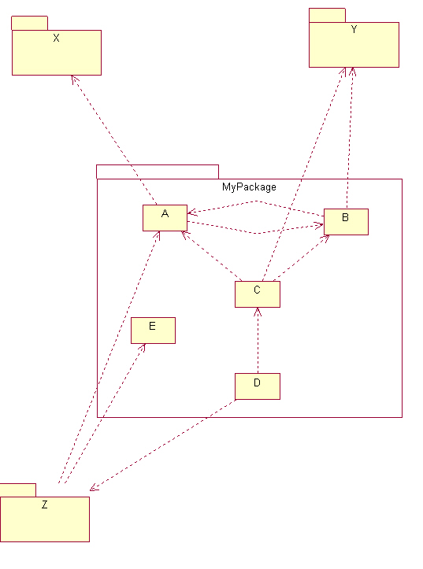
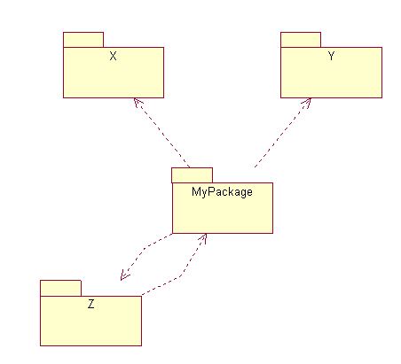

|
I see three parts to this project:
They work together according to the following workflow. The grayed-out files represent input to the workflow, the white files are output of the workflow.
|
|
A tool to extract dependencies from .class files.
At least, extract for each class the list of classes that it depends upon. If we have time, it might be useful to have a breakdown by method and attributes, but this may prove difficult.
Here is the command-line usage for the current tool:
USAGE: DependencyExtractor [-help] (defaults to false) [-maximize] (defaults to false) [-minimize] (defaults to false) [-out value] (defaults to ) [-serialize] (defaults to false) [-trace [value]] (defaults to System.out) [-verbose [value]] (defaults to System.out) [-xml] (defaults to false) [param ...] If no files are specified, it processes the current directory. If file is a directory, it is recusively scanned for files ending in ".class". Default is text output to the console.
An XML DTD to represent dependency information. The format must be rich enough to represent all the output of the extractor.
Here is the DTD:
<!DOCTYPE dependencies [ <!ELEMENT dependencies (package)* > <!ELEMENT package (name,outbound*,inbound*,class*) > <!ELEMENT class (name,outbound*,inbound*,feature*) > <!ELEMENT feature (name,outbound*,inbound*) > <!ELEMENT name (#PCDATA)* > <!ELEMENT outbound (#PCDATA)* > <!ATTLIST outbound type (package|class|feature) #REQUIRED > <!ELEMENT inbound (#PCDATA)* > <!ATTLIST inbound type (package|class|feature) #REQUIRED > ]>
A visualization tool to massage and display the XML data.
The tool must be able to filter the information and present the following types of dependencies:
Here are sample dependency graphs that one can produce, given the right input data:

|
|  |
|  |
It would be nice to have a GUI, but maybe we can keep it simple by producing Petal files or some other type of input for graphical (UML) tools.
Here is the command-line usage for the current tool:
USAGE: DependencyReporter [-c2c] (defaults to false) [-c2p] (defaults to false) [-class-filter] (defaults to false) [-class-filter-excludes value]* (defaults to []) [-class-filter-includes value]* (defaults to []) [-class-scope] (defaults to false) [-class-scope-excludes value]* (defaults to []) [-class-scope-includes value]* (defaults to []) [-excludes value]* (defaults to []) [-feature-filter] (defaults to false) [-feature-filter-excludes value]* (defaults to []) [-feature-filter-includes value]* (defaults to []) [-feature-scope] (defaults to false) [-feature-scope-excludes value]* (defaults to []) [-feature-scope-includes value]* (defaults to []) [-filter-excludes value]* (defaults to []) [-filter-includes value]* (defaults to []) [-help] (defaults to false) [-includes value]* (defaults to []) [-out value] (defaults to ) [-p2p] (defaults to false) [-package-filter] (defaults to false) [-package-filter-excludes value]* (defaults to []) [-package-filter-includes value]* (defaults to []) [-package-scope] (defaults to false) [-package-scope-excludes value]* (defaults to []) [-package-scope-includes value]* (defaults to []) [-scope-excludes value]* (defaults to []) [-scope-includes value]* (defaults to []) [-serialize] (defaults to false) [-trace [value]] (defaults to System.out) [-verbose [value]] (defaults to System.out) [-xml] (defaults to false) param1 ... -p2p shorthand for the combination: -package-scope -package-filter -c2p shorthand for the combination: -class-scope -package-filter -c2c shorthand for the combination: -class-scope -class-filter -f2f shorthand for the combination: -feature-scope -feature-filter -includes \"str\" shorthand for the combination: -scope-incldues "str" -filter-incldues "str" -excludes \"str\" shorthand for the combination: -scope-excldues "str" -filter-excldues "str" Defaults is text output to the console.